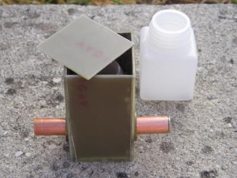

Come dicevo nell'introduzione, tempo fa mi è venuta voglia di provare a fare un piccolo "spettroscopio/colorimetro" sperimentale, naturalmente senza alcun intendimento di costruire uno strumento di misura, ma con lo scopo di fare un "giocattolo", diciamo così, didattico che verificasse l'assorbanza relativa di uno ione (o di una molecola colorata) e anche per avere la scusa di sposare bene assieme i miei due hobbies principali (chimica ed elettronica).
Mi ero proposto tassativamente di:
1- usare solo componenti che possedevo; il costo della realizzazione doveva essere minimo;
2- usare come elementi ottici fototransistor e LED anzichè fotocellule, lampadine speciali e monocromatore;
3- amplificare il segnale ottico con amplificatori operazionali e componenti low cost;
4- costruire una semplicissima celletta a tenuta di luce in cui inserire una cuvetta per la sostanza in esame;
5- stabilizzare opportunamente le tensioni di alimentazione dell'amplificatore a guadagno variabile e la corrente del LED di illuminazione e predisporre dei comandi di guadagno e di offset (azzeramento)
6- l'uscita sarebbe stata su milliamperometro con scala di riferimento totalmente relativa.
Per quanto detto al punto 2-, mancando il monocromatore lo spazzolamento in frequenza è limitato solo a sei "colori" fissi, nel range che va dal vicino IR al limite dell'inizio dell'ultravioletto. Questo è il limite maggiore dell'apparecchio, e del resto questo limite non è risolubile senza questo dispositivo (ved. con Google che cos'è un monocromatore!).
A tal proposito ricordo sempre l'aneddoto di un mio vecchio professore che ci raccontava che la fabbrica dei monocromatori era (a quei tempi lontani!) costruita nel deserto, per essere immune da ogni minimissima vibrazione e poter eseguire la microrigatura la più perfetta possibile. Che deserto sarà mai stato quello del bravo prof. Zampieri? Arizona? New Mexico? Chi lo sa... Adesso si fanno i DVD, che sono quasi quasi dei monocromatori della domenica, a migliaia di tonnellate...
Ritornando al nostro apparecchietto, le sorgenti di luce discrete (tanto discrete... sono solo sei!) sono costituite da dei semplici LED, con le seguenti lunghezze d'onda abbastanza approssimate ma più che sufficienti per i miei scopi:
- 880 nm (IR)
- 630 nm (rosso)
- 590 nm (giallo)
- 530 nm (verde)
- 470 nm (blu)
- 400 nm (UV)
Ho perso quasi una giornata per fare la celletta in cui inserire il contenitore per il liquido in esame ed il semplicissimo gruppo ottico trasmittente/ricevente. Il tutto ovviamente deve essere a tenuta di luce. Avevo previsto all'inizio un semplice contenitore in polietilene da mm 30x30x30 (come si vede nella foto), poi sostituito da una cuvetta specifica per analisi, a facce parallele e di dimensioni 12x12x45 (cammino ottico 10 mm).

La cuvetta è quel piccolo contenitore parallelepipedo di cui è noto il cammino ottico ed il materiale è di buona trasparenza; ci sono cuvette in vetro, a facce perfettamente parallele e calibrate (molto costose), e cuvette economiche in plastica: indovinare quali ho usato io...
Le due protuberanze laterali in rame che si vedono in foto contengono uno l'elemento illuminatore e l'altro il ricevitore.
Quest'ultimo è un fototransistor opportunamente alimentato con un microjack a sinistra.
Questa per ora è la celletta casalinga di questo fantomatico Spett/Col-PA-mode; in futuro la migliorerò.
Nella prossima puntata dirò qualcosa dell'amplificatore e dell'hardware completo.